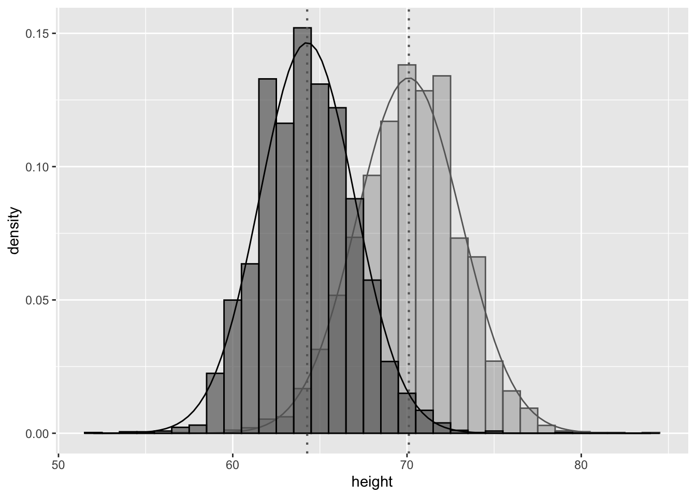

```{r}
#| lst-label: lst-read-in-data
#| lst-cap: "Kode for å lese inn data og definere noen nye variabler."
heights <- modelr::heights
heights <- heights %>%
mutate(
bmi = weight * 0.4536/(height * 2.54/100)^2,
married = fct_collapse(
.f = marital,
married = "married",
other_level = "not married"
),
edu_fac = cut(
x = education,
breaks = c(0, 12, 14, 16, 21),
labels = c("not_hs", "not_cc", "not_col", "col_plus"),
right = FALSE
)
) |>
# reorganiserer data s.a. de fire faktor-variablerne kommer
# lengst til høyre
select(income:age, education:bmi, everything()) |>
# Dropper marital og education siden disse ikke skal brukes
select(-education, -marital)
# Inntekt lik 0
heightsZeroInc <- heights |>
filter(income == 0)
# «Normal» inntekt
heightsNormInc <- heights |>
filter(income > 0 & income < 343830)
heightsHighInc <- heights |>
filter(income == 343830)
```Er det høyde som bestemmer inntekt?
1 Oppgaven
Hver gruppe skal skrive et «mini-paper» over lesten:
- Innledning
- Litteraturgjennomgang.
- Hva sier litteraturen om sammenhengen mellom:
- lønn og høyde
- lønn og bmi
- lønn og sivilstatus (gift/ugift)
- lønn og utdanning
- lønn og kjønn
- Hva sier litteraturen om sammenhengen mellom:
- Utfør en «EDA» av datasettet heights med utgangspunkt i forklaringsvariablene høyde, bmi, sivilstatus, utdanning og kjønn.
- Bruk tabeller for deskreptiv statistikk
- Bruk label og caption (forklarende tekst) for tabellene
- Når tabellen diskuteres i tekst, benytt kryssreferanser (vha. label satt vha. «hash-pipen» #| label: tbl-EtEllerAnnet)
- Med utgangspunkt i tabellen generert vha. av funksjonen
vtable::st()i Liste 2. Lag tilsvarende tabeller for (legg inn enfilter()kommando i pipe-en):- Ingen inntekt (heightsZeroInc)
- Normal inntekt (heightsNormInc)
- Høy inntekt (heightsHighInc)
- Diskuter forskjellen mellom de tre inntektsgruppene (null inntekt, normal inntekt og høy inntekt)
- Splitt så datasettet også mht. kjønn, (legg inn en
filter()kommando i pipe-en i koden fra Liste 2) dvs. lag tilsvarende tabeller for- Menn med inntekt 0
- Kvinner med inntekt 0
- Menn med normal inntekt
- Kvinner med normal inntekt
- Menn med høy inntekt
- Kvinner med høy inntekt
- Diskuter forskjellene mellom disse seks gruppene.
- For datasettet normal inntekt
- Er det noen interessante sammenhenger mht. noen av de andre variablene?
- Diskuter eventuelle funn
- Diskuter om det som fremkommer fra den deskreptive statistikken dere har generert ovenfor samsvar med funn i literaturen.
- Generer grafikk vha.
ggplot2.- Se koden i Liste 9 og lag et tilsvarende plot men for normale inntekteter
- Bruke farge for å angi kjønn for punktene
- Legg inn regresjonslinjer for hele datasettet og for menn og kvinner separat.
- Diskuter hva plotet viser
- Bruk
geom_histogram()oggeom_density()for å undersøke fordelingen til enkelt-variabler. - Bruk
pairs()eller tilsvarende for å undersøke korrelasjon mellom relevante variabler - Bruk
facet_wrap(),geom_point()oggeom_smooth()for nærmere undersøkelse av sammenhengen mellom variabler.
- Dere vil finne flere eksempler som bruker dette datasettet i «slidene» Exploratory Data Analysis (EDA). - Disse kan fungere som et utgangspunkt, men dere må også finne egne måter (tabeller/plots) for å studere dataene.
- Bruk tabeller for deskreptiv statistikk
- Konklusjon
- Er det virkelig høyde som bestemmer inntekt, eller har EDA-en avslørt at andre variabler kan spille en rolle.
- Referanser
Mot slutten av dette dokumentet vil dere finne litt innledene kode for å hjelpe dere igang.
1.0.1 Arbeidsform
Gruppene skal jobbe i et RStudio prosjekt koblet mot et Github repo.
1.0.2 Levering
Når dere er ferdig inviterer dere meg (agjest) inn i repo-et.

Jeg vil så:
- Lage en «fork» og så gjøre en «pull»,
- lage en ny gren
ag, - gjøre eventuelle «fix» for å få dokumentet til å kjøre
- dokumentet bør være reproduserbart i utgangspunktet
- foreslå eventuelle endringer og forbedringer
- opprette et nytt dokument
ag_comments.qmdmed mer generelle kommentarer
Dette vil jeg gjøre tilgjengelig som en «pull request» på Github. Dere kan da se hva jeg forslår og eventuelt akseptere mine endringer.
1.1 Her er noe litteratur som kan være et utgangspunkt:
1.1.1 Sammenhengen mellom inntekt og høyde og mellom inntekt og utdanning
Bureau (u.å.); Case og Paxson (2008); Case, Paxson, og Islam (2009); Deaton og Arora (2009); Hübler (2015); Mitchell (2020); Ochsenfeld (2016) og published (2009)
1.1.2 Sammenhengen mellom inntekt og kjønn
Aragão (u.å.); Bobbitt-Zeher (2007); Bureau (u.å.); Card, Cardoso, og Kline (2016); Hejase og Hejase (2020); Mitchell (2020); Nyirongo (u.å.); Ochsenfeld (2016); Petersen og Morgan (1995); Santos Silva og Klasen (2021); On-The-Economy-Blog (2020) og Gould, Schieder, og Geier (2016).
1.1.3 Sammenhengen mellom inntekt og ansiennitet (alder):
Medoff og Abraham (1980), Dash, Bakshi, og Chugh (2017) og Mincer (1974)
1.1.4 Sammenhengen inntekt og evnenivå (afqt):
Zagorsky (2007); Bound, Griliches, og Hall (1986), Wolfinger (2019), Kanarek (2013), NLS (2023) og Iii og Spriggs (1996)
1.1.5 Sammenhengen mellom inntekt og sivilstand (gift/ugift ):
On-The-Economy-Blog (2020); Vandenbroucke (u.å.) og Case og Paxson (2008)
1.1.6 Sammenheng mellom inntekt og bmi (body mass index):
Böckerman mfl. (2019); Caliendo og Gehrsitz (2016); Cawley (2015); Edwards, Bjørngaard, og Minet Kinge (2021); Han, Norton, og Stearns (2009); Hildebrand og Kerm (2010); Kan og Lee (2012); Lee (2017); Sargent og Blanchflower (1994); «The Impact of Obesity on Wages | Journal of Human Resources» (u.å.) og «The Wage Effects of Obesity: A Longitudinal Study - Baum - 2004 - Health Economics - Wiley Online Library» (u.å.)
1.2 Beskrivelse av data
Datasettet er kalt heights og er en del av pakken modelr, Wickham (2020), som er en utvidelspakke for statistikksystemet R, R Core Team (2021).
2 Kode
Koden i Liste 1 er kode som samtlige grupper bør kjøre rett etter setup chunk-en slik at vi jobber med samme data og har samme variabelnavn. Merk bruken av «hash-pipene» lst-label og lst-cap som gjør det mulig å ha kryssreferanser til kode-listinger og også «caption» på en kode-listing.
2.1 Gjennomgang av koden
Her følger en gjennomgang av koden ovenfor steg for steg. I tillegg gis noen eksempler på bruk av vt() og st() fra pakken vtable kombinert med funksjonen as_flextable() fra flextable pakken.. Sjekk også kode fra «slidene» i msb104.netlify.app for hvordan man kan generere tabeller vha. funksjonen as_flextable().
Vi starter med å lese inn datasettet.
heights <- modelr::heightsVi kan så bruke st() fra vtable og as_flextable() fra flextable for å generere deskreptive statistikk for hele datasettet.
st() og as_flextable(). Merk bruken av «hash pipes». Her setter vi label og caption for både kode-listing og resulterende tabell. Hvis det var en figur vi genererte ville vi byttet ut tbl- med fig-.
```{r}
#| label: tbl-desc-stat
#| tbl-cap: "Deskreptiv statistikk for datasettet `modelr::heights`."
#| lst-label: lst-heights-st
#| lst-cap: "Kode for å generere deskreptiv-statistikk tabell vha. funksjonene
#| `st()` og `as_flextable()`. Merk bruken av «hash pipes». Her setter vi
#| label og caption for både kode-listing og resulterende tabell. Hvis
#| det var en figur vi genererte ville vi byttet ut `tbl-` med `fig-`."
heights |>
st(out = "return") |>
as_flextable(max_row = 20) |>
line_spacing(space = 0.3, part = "all") |>
fontsize(size = 9, part = "body") |>
fontsize(size = 10, part = "header") |>
width(width = 16, unit = "mm") |>
delete_part("footer")
```modelr::heights.
Variable | N | Mean | Std. Dev. | Min | Pctl. 25 | Pctl. 75 | Max |
|---|---|---|---|---|---|---|---|
character | character | character | character | character | character | character | character |
income | 7006 | 41204 | 55892 | 0 | 166 | 55000 | 343830 |
height | 7006 | 67 | 4.1 | 52 | 64 | 70 | 84 |
weight | 6911 | 188 | 44 | 76 | 157 | 212 | 524 |
age | 7006 | 51 | 2.2 | 47 | 49 | 53 | 56 |
afqt | 6744 | 41 | 29 | 0 | 15 | 65 | 100 |
bmi | 6911 | 29 | 6.2 | 13 | 25 | 32 | 75 |
sex | 7006 | ||||||
... male | 3402 | 49% | |||||
... female | 3604 | 51% | |||||
married | 7006 | ||||||
... married | 3806 | 54% | |||||
... not married | 3200 | 46% | |||||
edu_fac | 6996 | ||||||
... not_hs | 1058 | 15% | |||||
... not_cc | 3195 | 46% | |||||
... not_col | 1110 | 16% | |||||
... col_plus | 1633 | 23% |
Vi har altså 7006 observasjoner og 8 variabler. For variablene weight, education og afqt har vi noen NA-verdier.
Det har vært spekulert om observert lønnsmessig «høyde premium» egentlig er en skjult «vekt straff». Tanken er at det er en negativ sammenheng mellom høyde og overvekt og at arbeidsgivere er redd for at personer som strever med overvekt har større sjanse for å ha eller få alvorlig helseproblemer og at arbeidsgivere derfor anser disse arbeidstakerne som mindre produktive og derfor tilbyr lavere lønn. For å se om dette er tilfelle lager vi en ny variabel bmi («body mass index»). I tillegg lager vi en forenklet versjon av variabelen marital der vi bare skiller mellom married (TRUE) og not_married (FALSE).
bmi. I tillegg bruker vi funksjonen fct_collapse() til å «klappe sammen» de fem kategorien i marital til bare to kategorier i variabelen married.
```{r}
#| lst-label: lst-bmi-married
#| lst-cap: "Bruker mutate til å lage variabelen `bmi`. I tillegg
#| bruker vi funksjonen `fct_collapse()` til å «klappe sammen» de
#| fem kategorien i marital til bare to kategorier i variabelen
#| `married`."
#| eval: false
heights <- heights %>%
mutate(
bmi = weight * 0.4536/(height * 2.54/100)^2,
married = fct_collapse(
.f = marital,
married = "married",
other_level = "not married"
)
)
```Vi forenkler også variabelen education s.a. vi bare skiller mellom kategorien not_hs («Not High School Exam»; 0 \(\leq\) education < 12), not_cc («Not Community College»; 12 \(\leq\) education < 14) not_col («Not College»; 14 \(\leq\) education < 16) og col_plus («4 years College or more»; education \(\geq\) 16)
edu_fac = cut_interval(
x = education,
breaks = c(0, 12, 14, 16, 21),
labels = c("not_hs", "not_cc",
"not_col", "col_plus"),
right = FALSE
)Det kan være hensiktmessig å samle kategorivariablene lengst til høyre i datasettet (f.eks blir resultatet av st()en noe ryddigere tabell).
select(income:age, education:bmi, everything())Vi kommer ikke til å bruke variablene education og marital så disse dropper vi.
marital og education så disse droppes fra datasettet.
select(-education, -marital)Oversikt over heights med nye variabler:
st(). Merk bruken av argumentet missing = TRUE slik at vi klart ser hvor mange NA verdier vi har for de ulike variablene.
heights |>
vt(missing = TRUE, out = "return") |>
as_flextable(
max_row = 20,
spacing = 0.3,
part = "all"
) |>
delete_part("footer")height datasett. Har benyttet argumentet missing = TRUE i vt() funksjonen.
Name | Class | Values | Missing |
|---|---|---|---|
character | character | character | character |
income | integer | Num: 0 to 343830 | 0 |
height | numeric | Num: 52 to 84 | 0 |
weight | integer | Num: 76 to 524 | 95 |
age | integer | Num: 47 to 56 | 0 |
afqt | numeric | Num: 0 to 100 | 262 |
bmi | numeric | Num: 12.874 to 74.99 | 95 |
sex | factor | 'male' 'female' | 0 |
married | factor | 'married' 'not married' | 0 |
edu_fac | factor | 'not_hs' 'not_cc' 'not_col' 'col_plus' | 10 |
2.2 Splitter i tre datasett
Til slutt deler vi heights inn i tre datasett, hhv. heights_inc_zero, heights_inc_norm og heights_inc_high. Se Liste 8 for detaljer. Vi vil analysere heights_inc_norm grundigst og så sjekke eventuelle funn opp mot heights_inc_zero og heights_inc_high.
hoyde inn i tre «subsets». Datasettet hoydeNormInc er det vi vil konsentrere oss om.
# Inntekt lik 0
heightsZeroInc <- heights |>
filter(income == 0)
# «Normal» inntekt
heightsNormInc <- heights |>
filter(income > 0 & income < 343830)
# Høy inntekt
heightsHighInc <- heights |>
filter(income == 343830)2.3 Scatterplot for høyde og inntekt
I Liste 9 er gjengitt kode for et «scatter plot» av høyde mot inntekt. Vi har benyttet geom_jitter() som er en variant av geom_point().
ggplot2.
```{r}
#| label: fig-height-inc
#| fig-cap: "Plot av inntekt mot høyde. Fra modell-linjen som er
#| lagt inn ser vi at det ser ut til å være en positiv sammenheng
#| mellom høyde og inntekt. Vi merker oss også de horisontale
#| båndene for inntekt lik 0 og en inntekt litt over 300000."
#| lst-label: lst-height-inc-plot
#| lst-cap: "Kode for å generere «scatterplot» vha. `ggplot2`."
heights |>
ggplot(
mapping = aes(
x = height,
y = income
)
) +
geom_jitter(
size = 1,
alpha = 0.40
) +
geom_smooth(
formula = y ~ x,
method = "lm",
colour = "black",
lwd = 0.75,
se = FALSE
)
```2.4 Lage histogram for to subsets
En teknikk som kan være aktuell i en EDA anlyse er å lage histogram av datene der dataene er delt opp i undrgrupper. Plasserer vi histogrammene i samme figur er de lettere å sammenligne.
Her illustreres denne teknikken ved å studere fordelingen av høyde for hhv. kvinner og menn. Se kode i Liste 10. Vi starter med å regne ut gjennomsnittlig høyde og standardavvik for hhv. menn og kvinner. Disse parametrene vil vi bruke for å tegne inn normalfordelingskurver i samme plot.
meanHeightMale <- heights |>
filter(sex == 'male') %>%
select(height) |>
# konverterer en tibble med 3402 rekker og 1 kolonne
# til en vektor med 3402 elementer siden mean() forlanger en
# vektor som input
pull() |>
# finner gjennomsnittet av verdiene i vektoren
mean()
meanHeightFemale <- heights |>
filter(sex == 'female') %>%
select(height) |>
pull() |>
mean()
# standard deviation
sdHeightMale <- heights |>
filter(sex == 'male') |>
select(height) |>
pull() |>
sd()
sdHeightFemale <- heights |>
filter(sex == 'female') |>
select(height) |>
pull() |>
sd()Så genererer vi histogram og overliggende empirisk fordeling tegnet utfra gjennomsnittlig høyde og tilhørende standardavvik som vi har regnet ut ovenfor.
```{r}
#| label: fig-hist
#| fig-cap: "Histogram av høyde fordelt på kjønn, kvinner er mørk grå mens menn er lysere grå. I tillegg er normalfordeling
#| for observert gjennomsnitt og standard-avvik, også fordelt på kjønn, tegnet inn."
#| lst-label: st-hist
#| lst-cap: "Kode for å generer histogrammer for høyde for hhv. menn og
#| kvinner med inntegnet normalfordelingskurve (tetthetsfunksjon).
#| Normalfordelingskurvene er tegnet ut fra gjennomsnitt og standardavvik
#| beregnet ovenfor. Dataene er fra hele datasettet `heights`."
heights %>%
ggplot() +
### male ###
geom_histogram(
data = filter(heights, sex == "male"),
mapping = aes(x = height, y = after_stat(density)),
binwidth = 1,
alpha = 0.3,
colour = 'grey40',
fill = 'grey40'
) +
geom_vline(
xintercept = meanHeightMale,
colour = 'grey40',
lwd = 0.75,
linetype = 3
) +
stat_function(
fun = dnorm,
args = list(
mean = meanHeightMale,
sd = sdHeightMale
),
colour = 'grey40'
) +
# female
geom_histogram(
data = filter(heights, sex == "female"),
mapping = aes(x = height, y = after_stat(density)),
binwidth = 1,
alpha = 0.7,
colour = 'black',
fill = 'grey40'
) +
stat_function(
fun = dnorm,
args = list(
mean = meanHeightFemale,
sd = sdHeightFemale
),
colour = 'black'
) +
geom_vline(
xintercept = meanHeightFemale,
colour = 'grey40',
lwd = 0.75,
linetype = 3
)
```

2.5 Referanser
Aragão, Carolina. u.å. «Gender Pay Gap in U.S. Hasn’t Changed Much in Two Decades». Pew Research Center. Åpnet 6. oktober 2023.
Bobbitt-Zeher, Donna. 2007. «The Gender Income Gap and the Role of Education». Sociology of Education 80 (1): 1–22.
Bound, John, Zvi Griliches, og Bronwyn H. Hall. 1986. «Wages, Schooling and IQ of Brothers and Sisters: Do the Family Factors Differ?» International Economic Review 27 (1): 77–105.
Bureau, US Census. u.å. «Among the Educated, Women Earn 74 Cents for Every Dollar Men Make». Census.gov. https://www.census.gov/library/stories/2019/05/college-degree-widens-gender-earnings-gap.html. Åpnet 6. oktober 2023.
Böckerman, Petri, John Cawley, Jutta Viinikainen, Terho Lehtimäki, Suvi Rovio, Ilkka Seppälä, Jaakko Pehkonen, og Olli Raitakari. 2019. «The Effect of Weight on Labor Market Outcomes: An Application of Genetic Instrumental Variables». Health Economics 28 (1): 65–77.
Caliendo, Marco, og Markus Gehrsitz. 2016. «Obesity and the Labor Market: A Fresh Look at the Weight Penalty». Economics & Human Biology 23 (desember): 209–25.
Card, David, Ana Rute Cardoso, og Patrick Kline. 2016. «Bargaining, Sorting, and the Gender Wage Gap: Quantifying the Impact of Firms on the Relative Pay of Women *». The Quarterly Journal of Economics 131 (2): 633–86.
Case, Anne, og Christina Paxson. 2008. «Stature and Status: Height, Ability, and Labor Market Outcomes». Journal of Political Economy 116 (3): 499–532.
Case, Anne, Christina Paxson, og Mahnaz Islam. 2009. «Making Sense of the Labor Market Height Premium: Evidence from the British Household Panel Survey». Economics Letters 102 (3): 174–76.
Cawley, John. 2015. «An Economy of Scales: A Selective Review of Obesity’s Economic Causes, Consequences, and Solutions». Journal of Health Economics 43 (september): 244–68.
Dash, Mihir, Suprabha Bakshi, og Aarushi Chugh. 2017. «The Relationship Between Work Experience and Employee Compensation: A Case Study of the Indian IT Industry». Journal of Applied Management and Investments 6 (1): 5–10.
Deaton, Angus, og Raksha Arora. 2009. «Life at the Top: The Benefits of Height». Economics & Human Biology 7 (2): 133–36.
Edwards, Christina Hansen, Johan Håkon Bjørngaard, og Jonas Minet Kinge. 2021. «The Relationship Between Body Mass Index and Income: Using Genetic Variants from HUNT as Instrumental Variables». Health Economics 30 (8): 1933–49.
Gould, Elise, Jessica Schieder, og Kathleen Geier. 2016. «What Is the Gender Pay Gap and Is It Real?: The Complete Guide to How Women Are Paid Less Than Men and Why It Can’t Be Explained Away». Economic Policy Institute. https://www.epi.org/publication/what-is-the-gender-pay-gap-and-is-it-real/.
Han, Euna, Edward C. Norton, og Sally C. Stearns. 2009. «Weight and Wages: Fat Versus Lean Paychecks». Health Economics 18 (5): 535–48.
Hejase, Hussin J., og Ale J. Hejase. 2020. «Gender Discrimination: The Gender Wage Gap». Journal of Economics and Economic Education Research 21 (1S): 1–4.
Hildebrand, Vincent, og Philippe Van Kerm. 2010. «Body Size and Wages in Europe: A Semi-Parametric Analysis».
Hübler, Olaf. 2015. «Height and Wages». I.
Iii, William, og William Spriggs. 1996. «What Does the AFQT Really Measure: Race, Wages, Schooling and the AFQT Score». The Review of Black Political Economy 24 (juni): 13–46.
Kan, Kamhon, og Myoung-Jae Lee. 2012. «Lose Weight for a Raise Only If Overweight: Marginal Integration for Semi-Linear Panel Models». Journal of Applied Econometrics 27 (4): 666–85.
Kanarek, Jaret. 2013. «Youth Aptitude as a Predictor of Adulthood Income - CORE». Undergaduate Economic Review, 1. serie, 10.
Lee, Wang-Sheng. 2017. «Big and Tall: Does a Height Premium Dwarf an Obesity Penalty in the Labor Market?» Economics & Human Biology 27 (november): 289–304.
Medoff, James L., og Katharine G. Abraham. 1980. «Experience, Performance, and Earnings». The Quarterly Journal of Economics 95 (4): 703–36.
Mincer, Jacob A. 1974. «Schooling, Experience, and Earnings». NBER Books.
Mitchell, Travis. 2020. «2. Women’s Lead in Skills and Education Is Helping Narrow the Gender Wage Gap». Pew Research Center’s Social & Demographic Trends Project.
NLS. 2023. «Aptitude, Achievement & Intelligence Scores | National Longitudinal Surveys». https://www.nlsinfo.org/content/cohorts/nlsy79/topical-guide/education/aptitude-achievement-intelligence-scores.
Nyirongo, Venge. u.å. «Tackling Discriminatory Labour Practices, Labour Market Segmentation and Gender Pay Gaps».
Ochsenfeld, Fabian. 2016. «The Gender Income Gap and the Roles of Education and Family Formation: A Scientific Replication of Bobbitt-Zeher (2007)». {{SSRN Scholarly Paper}}. Rochester, NY.
On-The-Economy-Blog. 2020. «Taking a Closer Look at Marital Status and the Earnings Gap». https://www.stlouisfed.org/on-the-economy/2020/september/taking-closer-look-marital-status-earnings-gap.
Petersen, Trond, og Laurie A. Morgan. 1995. «Separate and Unequal: Occupation-Establishment Sex Segregation and the Gender Wage Gap». American Journal of Sociology 101 (2): 329–65.
published, Robert Roy Britt. 2009. «Taller People Earn More Money». Livescience.com. https://www.livescience.com/5552-taller-people-earn-money.html.
R Core Team. 2021. R: A Language and Environment for Statistical Computing. Vienna, Austria: R Foundation for Statistical Computing. https://www.R-project.org/.
Santos Silva, Manuel, og Stephan Klasen. 2021. «Gender Inequality as a Barrier to Economic Growth: A Review of the Theoretical Literature». Review of Economics of the Household 19 (3): 581–614.
Sargent, James D., og David G. Blanchflower. 1994. «Obesity and Stature in Adolescence and Earnings in Young Adulthood: Analysis of a British Birth Cohort». Archives of Pediatrics & Adolescent Medicine 148 (7): 681–87.
«The Impact of Obesity on Wages | Journal of Human Resources». u.å. https://jhr.uwpress.org/content/XXXIX/2/451.short. Åpnet 6. oktober 2023.
«The Wage Effects of Obesity: A Longitudinal Study - Baum - 2004 - Health Economics - Wiley Online Library». u.å. https://onlinelibrary.wiley.com/doi/abs/10.1002/hec.881. Åpnet 6. oktober 2023.
Vandenbroucke, Guillaume. u.å. «Married Men Sit Atop the Wage Ladder». https://research.stlouisfed.org/publications/economic-synopses/2018/09/14/married-men-sit-atop-the-wage-ladder. Åpnet 6. oktober 2023.
Wickham, Hadley. 2020. modelr: Modelling Functions that Work with the Pipe. https://CRAN.R-project.org/package=modelr.
Wolfinger, Nicholas H. 2019. «Can Intelligence Predict Income?» Institute for Family Studies. https://ifstudies.org/blog/can-intelligence-predict-income.
Zagorsky, Jay L. 2007. «Do You Have to Be Smart to Be Rich? The Impact of IQ on Wealth, Income and Financial Distress». Intelligence 35 (5): 489–501.